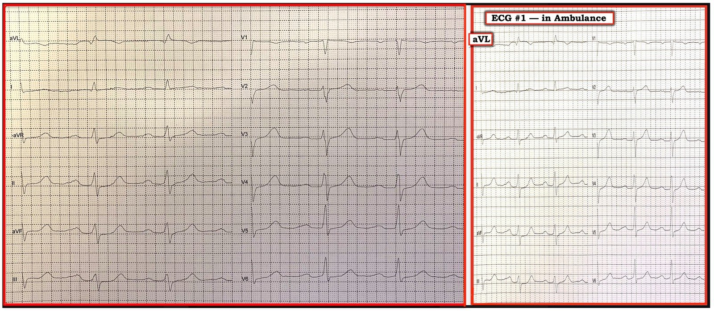
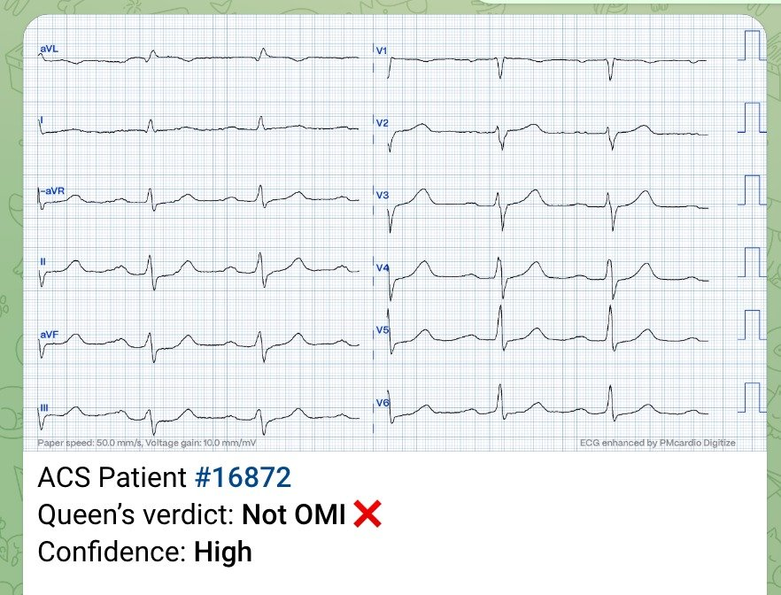
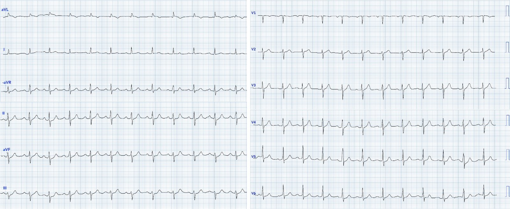
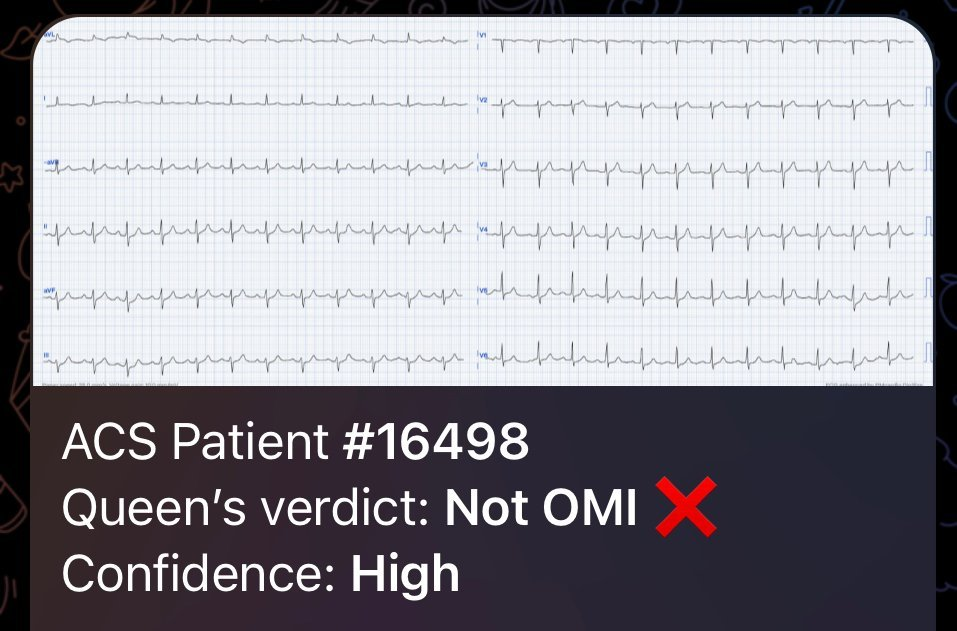
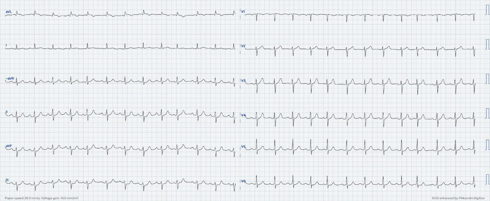
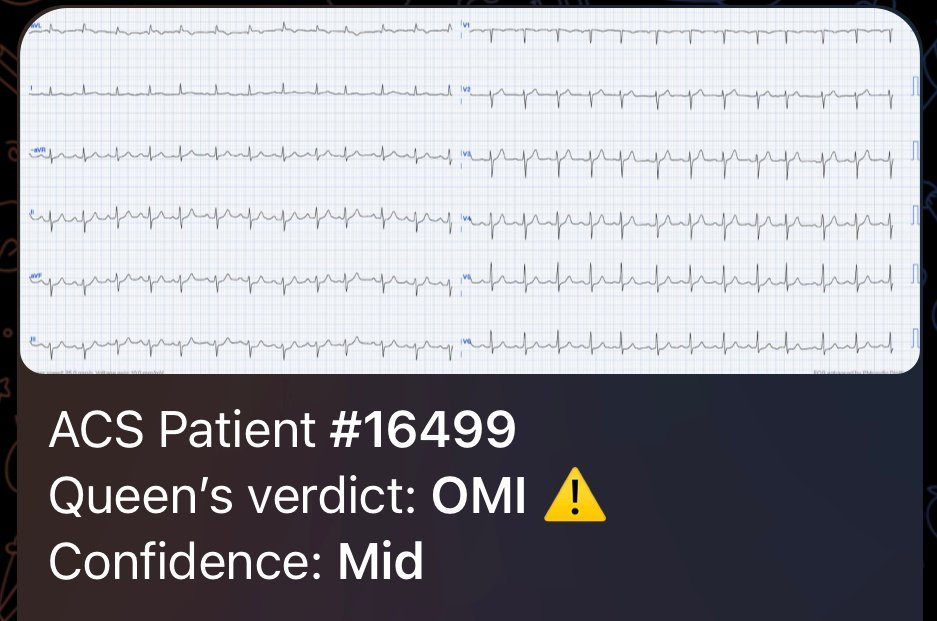
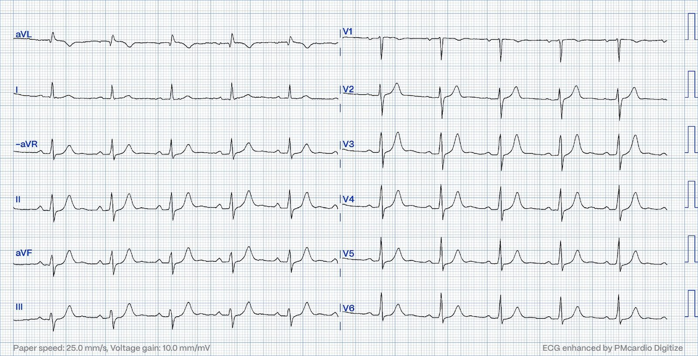
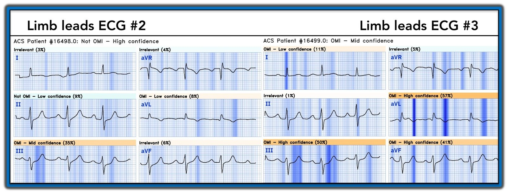
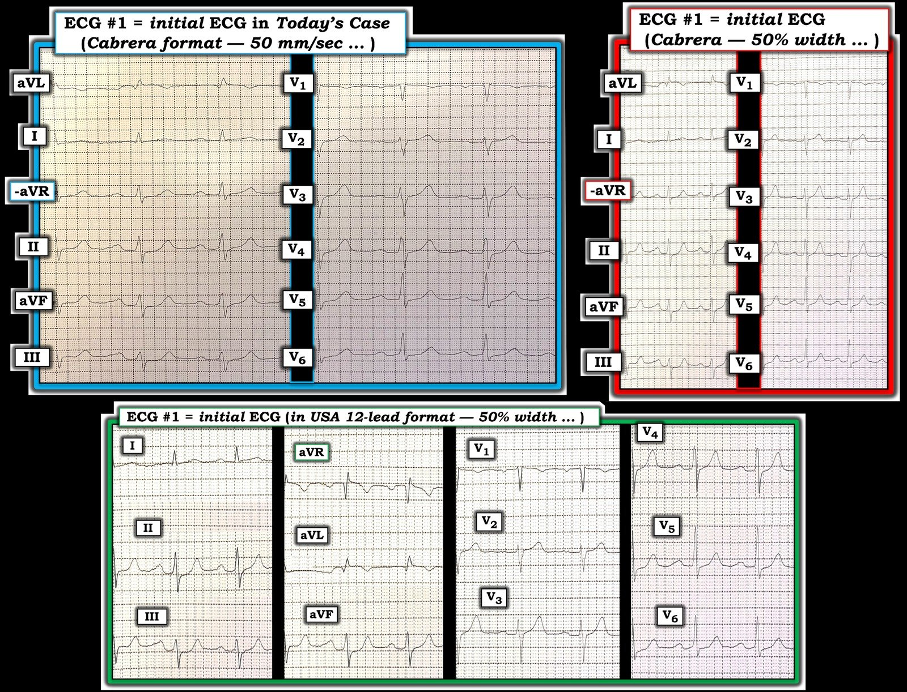

15/12/2023 — Một điện tâm đồ chỉ có thay đổi «ranh giới»
Bản dịch tiếng Việt của bài "An ECG with only «marginal» change" – Dr. Smith’s ECG Blog. Giữ nguyên toàn bộ 10 hình ảnh của bản gốc.
Bài này của Magnus Nossen, đến từ Na Uy
Bệnh nhân là nam giới hơn 70 tuổi, có tiền sử tăng huyết áp và rối loạn sử dụng thuốc lá. Ngoài ra ông khỏe mạnh. Bệnh nhân gọi đội cấp cứu ngoài viện (EMS) sau vài giờ đau ngực, khởi phát lúc 5:30 sáng. Cơn đau được mô tả ở mức 6/10, lan lên vai phải. Dấu hiệu sinh tồn trong giới hạn bình thường, và bệnh nhân trông không có vẻ nặng. Đau ngực được mô tả vừa như dao đâm vừa như đè ép. Điện tâm đồ dưới đây được ghi và truyền điện tử về trung tâm PCI của chúng tôi để đánh giá.
Bạn diễn giải thế nào? Bạn có lo lắng không? Hãy để ý cách bố trí chuyển đạo. Các chuyển đạo chi được trình bày theo định dạng Cabrera. Bên trái là 50mm/s (chuẩn ở Na Uy) Bên phải, chiều rộng hình đã được thu nhỏ 50%, qua đó thực chất chuyển hình về tốc độ 25mm/s.
Điện tâm đồ #1


Tôi nghĩ nhiều thầy thuốc có thể yên tâm khi xem điện tâm đồ này. Nó không đáp ứng tiêu chuẩn kinh điển để kích hoạt phòng thông tim (cath lab) cấp cứu. Có trôi đường nền nhẹ trên điện tâm đồ này, khiến việc diễn giải khó khăn hơn. Tuy nhiên, có ST chênh xuống rõ rệt ở các chuyển đạo II, III và aVF. Có ST chênh lên nhẹ nhưng chắc chắn kèm sóng T đảo ngược ở chuyển đạo aVL. Các dấu hiệu này đáng lo ngại cho OMI vùng bên cao, nhưng khi không có điện tâm đồ trước đó để so sánh thì khó chắc chắn. Bệnh nhân được nhận để đánh giá cấp cứu tại phòng thông tim dựa trên điện tâm đồ và triệu chứng hiện tại.
Smith: Tôi nghĩ đây là chẩn đoán xác định OMI vùng bên cao, dù đã có tái tưới máu (aVL có ST chênh lên (STE) rất kín đáo, kèm sóng Q và sóng T đảo ngược; ST chênh xuống (STD) soi gương ở các chuyển đạo dưới, CỘNG THÊM STD do thiếu máu cục bộ ở V5, 6. Tôi ngạc nhiên là Queen không nhận ra:


Queen thường nhận ra những ca như thế này, nhưng chúng tôi chủ yếu dạy Queen bằng định dạng 3 x 4 với tốc độ 25 mm/giây. Theo lý thuyết, điều đó lẽ ra không tạo ra khác biệt gì.
Dưới đây là điện tâm đồ thứ hai được ghi ở bệnh nhân này (điện tâm đồ #2) — kèm kết quả diễn giải của Queen of Hearts (QoH) bên dưới. Điện tâm đồ này được ghi khoảng 3 phút sau điện tâm đồ đầu tiên.
Điện tâm đồ #2


Có các thay đổi ST-T động (dynamic) rất nhẹ khi so với điện tâm đồ #1. Đáng chú ý nhất là ST chênh xuống ở các chuyển đạo dưới có dạng dốc lên hơn một chút. Nói cách khác, đoạn ST ở các chuyển đạo dưới trên điện tâm đồ đầu tiên thẳng đuỗn hơn, điều này đáng lo ngại hơn cho thiếu máu cục bộ. Tuy nhiên, kết quả diễn giải của QoH là như nhau cho cả hai điện tâm đồ.
Kết quả diễn giải của QoH cho điện tâm đồ #2


Thông thường, khi bệnh nhân được nhận để đánh giá cấp cứu tại phòng thông tim, đội EMS giữ bệnh nhân nối với máy điện tâm đồ mười hai chuyển đạo trong suốt quá trình vận chuyển. Điện tâm đồ được truyền trực tiếp về cơ sở của chúng tôi. Điều này cực kỳ hữu ích, vì các thay đổi động có thể được đánh giá liên tục.
15 phút sau quyết định kích hoạt phòng thông tim, trong lúc vận chuyển đến trung tâm PCI, điện tâm đồ #3 được ghi.


Điện tâm đồ #3 (Điện tâm đồ ghi lại, thực hiện 15 phút sau điện tâm đồ ban đầu)
Bạn có thấy thay đổi nào không? Giờ bạn sẽ diễn giải điện tâm đồ này như thế nào?
Điện tâm đồ trên cho thấy các dấu hiệu OMI rõ ràng hơn. Điều này có lẽ không dễ nhận ra nếu bạn chưa được huấn luyện để nhận biết các thay đổi thiếu máu cục bộ kín đáo. Có ST chênh lên tăng dần ở chuyển đạo aVL cùng ST chênh xuống rõ hơn ở các chuyển đạo dưới. Cũng có đoạn ST thẳng đuỗn nhẹ và ST chênh lên nhẹ ở chuyển đạo I so với các điện tâm đồ đầu tiên. Những thay đổi này xác nhận chắc chắn có OMI đang diễn ra. Các thay đổi này cũng minh họa rõ giá trị của các điện tâm đồ liên tiếp hoặc theo dõi điện tâm đồ liên tục ở bệnh nhân nguy cơ cao.
Giờ đây QoH nhận ra OMI với độ tin cậy trung bình.


Tại phòng thông tim, bệnh nhân được phát hiện tắc 100% một nhánh bờ thứ 1 nhỏ của động mạch mũ trái (LCx). Tổn thương thủ phạm được mở thông và đặt stent. Troponin T độ nhạy cao ban đầu là 810ng/L, sau đó đạt đỉnh 2333ng/L.
Dưới đây là điện tâm đồ sau PCI.


Điện tâm đồ sau PCI
ST chênh lên ở chuyển đạo aVL đã biến mất. Sóng T đảo ngược ở aVL rõ hơn. Có sóng T lớn ở các chuyển đạo dưới. Trong bối cảnh này — bệnh nhân hết đau, sau PCI, và khi xét đến các điện tâm đồ trước đó — các sóng T lớn ở các chuyển đạo dưới là thay đổi soi gương của sóng T tái tưới máu vùng bên, chứ không phải sóng T tối cấp của thiếu máu cục bộ.
Các tệp video dưới đây cho thấy chỗ tắc và dòng chảy sau khi luồn dây dẫn qua động mạch thủ phạm.
BÀN LUẬN: Ca này minh họa rất rõ các thay đổi OMI thực sự có thể kín đáo đến mức nào. Mô hình AI Queen of Hearts đã không nhận ra OMI trên điện tâm đồ ban đầu. Dưới đây là phần giải thích (explainability) của QoH cho các chuyển đạo chi của điện tâm đồ #2 (nửa trái của hình) và các chuyển đạo chi của điện tâm đồ #3 (nửa phải của hình). Hai bộ sáu chuyển đạo chi được đặt cạnh nhau để so sánh. Tôi đã bỏ các chuyển đạo trước tim vì chúng không bổ sung nhiều thông tin trong ca này.
Bạn có thể xem từng chuyển đạo và so sánh hai điện tâm đồ. Khi đó bạn có thể nhận ra thay đổi động và thấy những phần nào của dạng sóng được QoH xác định là dấu hiệu thiếu máu cục bộ. Mô hình AI có thấy chuyển đạo III và aVL hơi đáng ngờ trên điện tâm đồ #2, nhưng chưa đủ để đưa ra chẩn đoán OMI. Các thay đổi ST-T ở các chuyển đạo chi trên điện tâm đồ ghi lại (#3) dẫn đến chẩn đoán OMI chính xác.


Những điểm cần học:
- Các điện tâm đồ liên tiếp rất có giá trị khi cần nhận diện một quá trình động như hội chứng vành cấp (ACS).
- OMI của bệnh nhân này được nhận ra sớm nhờ chuyên gia đọc điện tâm đồ. Rốt cuộc, khi được huấn luyện thêm, QoH sẽ vượt trội hơn bất kỳ con người nào trong việc phát hiện tắc mạch vành cấp.
- Tích hợp kết quả diễn giải của QoH vào điện tâm đồ 12 chuyển đạo theo thời gian thực ở bệnh nhân nguy cơ cao có thể cải thiện đáng kể việc chẩn đoán sớm OMI.

===================================
BÌNH LUẬN CỦA TÔI, bởi KEN GRAUER, MD (16/12/2023):
===================================
Xin CẢM ƠN BS. Magnus Nossen (đến từ Fredrikstad, Na Uy) — người định kỳ đóng góp cho Dr. Smith’s ECG Blog loạt ca bệnh hấp dẫn và ấn tượng của mình.
- Ngoài các bài học mang tính giáo dục — những đóng góp của BS. Nossen còn định kỳ là dịp để ôn lại định dạng Cabrera, ghi ở tốc độ 50 mm/giây — vốn là định dạng ghi điện tâm đồ thông dụng ở đất nước anh.
Ca hôm nay minh họa một OMI đã được thông tim xác nhận nhưng có thể quá dễ bị bỏ sót vì: i) Các thay đổi điện tâm đồ trên bản ghi ban đầu rất kín đáo, và không thỏa tiêu chuẩn STEMI; ii) Điện tâm đồ ban đầu được ghi theo định dạng Cabrera, vốn nhiều thầy thuốc lâm sàng không quen thuộc (nhất là khi dùng tốc độ ghi 50 mm/giây) — và — iii) ST chênh lên mức độ vừa phải có trên bản ghi ban đầu hôm nay chỉ thấy ở một chuyển đạo duy nhất ( = chuyển đạo aVL).
- Với những ai muốn ôn nhanh định dạng Cabrera trong ghi điện tâm đồ — Xin xem Bình luận của tôi ở cuối trang trong bài ngày 26 tháng Mười năm 2020 trên Dr. Smith’s ECG Blog.
- Như tôi vẫn định kỳ “thú nhận” mỗi khi được đưa một điện tâm đồ ghi ở tốc độ 50 mm/giây — tôi thường xuyên thu nhỏ chiều rộng của điện tâm đồ trước mặt trước khi bắt đầu diễn giải. Đó là vì não tôi đã được “lập trình” để diễn giải điện tâm đồ 12 chuyển đạo và dải nhịp ở tốc độ 25 mm/giây vốn là chuẩn tại Hoa Kỳ. Sau hơn 4 thập kỷ diễn giải hàng chục nghìn bản ghi — có một quá trình “nhận dạng hình mẫu” tức thì (tự động) diễn ra ngay trong não tôi, thậm chí trước khi tôi bắt đầu đánh giá có hệ thống bất kỳ bản ghi nào. Quá trình này bị vô hiệu hóa bởi sự hiện diện xa lạ của các phức bộ có kích thước khác khi dùng tốc độ ghi 50 mm/giây.
- LƯU Ý: Một số nước (như Đức) thường dùng tốc độ ghi 50 mm/giây, kể cả khi không dùng định dạng Cabrera. Thường thì chỉ nhìn qua là thấy ngay khi dùng tốc độ 50 mm/giây — nhưng đôi khi thì không. Điều này đặc biệt đúng khi đánh giá tần số tim của các nhịp QRS hẹp (tức là, một nhịp QRS hẹp có thể trông như giãn rộng và chậm quá mức nếu bạn không nhận ra tốc độ ghi 50 mm/giây). Vì vậy — điều quan trọng là luôn để ý đến tốc độ ghi (và NHẤT ĐỊNH phải làm rõ XEM bản ghi bạn đang diễn giải có đến từ nước ngoài hay không — nhất là khi tốc độ ghi không được ghi chú ở cuối điện tâm đồ).
3 định dạng điện tâm đồ trong Hình 1:
Để giúp nắm bắt các khái niệm MẤU CHỐT trong ca hôm nay — tôi nghĩ sẽ hữu ích nếu trình bày 3 cách mà tôi chọn để minh họa điện tâm đồ ban đầu hôm nay trong Hình 1.
- Ở góc trên bên trái của Hình 1 (viền XANH nhạt) — là điện tâm đồ gốc mà BS. Nossen đã xem (tức là, theo định dạng Cabrera — ghi ở tốc độ 50 mm/giây). Như tôi đã nêu trong phần mở đầu ở trên — tôi hoàn toàn thừa nhận mình không tự tin khi diễn giải điện tâm đồ 12 chuyển đạo ghi ở tốc độ 50 mm/giây — đó là lý do tôi lập tức thu nhỏ chiều rộng của bản ghi này 50% (bản ghi phía trên bên phải trong Hình 1 — viền ĐỎ).
- Cả hai bản ghi phía trên trong Hình 1 đều được ghi theo định dạng Cabrera — mà theo Bình luận của tôi ở cuối trang trong bài ngày 26 tháng Mười năm 2020 — bao gồm việc đảo ngược chuyển đạo aVR (thành aVR âm = -aVR) — cùng cách trình bày các chuyển đạo mặt phẳng trán theo trình tự hợp lý hơn, bắt đầu từ chuyển đạo aVL (ở -30 độ) — và trải ra theo các khoảng đều nhau 30 độ cho đến chuyển đạo bên phải xa nhất ( = chuyển đạo III ở +120 độ).
- Với độc giả ưa định dạng mà họ quen thuộc nhất — tôi đã chuyển điện tâm đồ ban đầu hôm nay sang cách bố trí 12 chuyển đạo thường dùng nhất ở Hoa Kỳ, kèm thu nhỏ chiều rộng 50% để dễ nhận biết bằng mắt (bản ghi phía dưới trong Hình 1 — viền XANH LÁ).


VÌ SAO ca hôm nay lại khó?
Dù bạn ưa định dạng nào trong Hình 1 — việc đánh giá điện tâm đồ ban đầu hôm nay vẫn là một thử thách. Dù vậy, ở một người đàn ông ngoài 70 tuổi có yếu tố nguy cơ (tăng huyết áp; hút thuốc lá) bị đánh thức bởi CP (Chest Pain — đau ngực) mới khởi phát — điện tâm đồ #1 nên được diễn giải là gợi ý OMI cấp cho đến khi chứng minh được điều ngược lại.
- Chuyển đạo aVL là chuyển đạo “cao nhất” trong các chuyển đạo bên cao (tương ứng với góc nhìn -30 độ trên mặt phẳng trán — so với vị trí 0 độ của chuyển đạo I). Như BS. Nossen đã nêu — tuy nhẹ, vẫn có — nếu không phải là chênh lên thì cũng là — sự uốn vòm (coving) bất thường của đoạn ST ở chuyển đạo aVL, kết thúc bằng sóng T đảo ngược rõ rệt. Xét biên độ nhỏ của sóng R ở chuyển đạo này — sóng Q ở aVL rộng bất thường.
- Bằng chứng ủng hộ rằng hình ảnh bất thường ở chuyển đạo aVL là một dấu hiệu “thật” — đến từ việc đoạn ST thẳng đuỗn không thể nhầm lẫn (nếu không phải là chênh xuống nhẹ) ở mỗi chuyển đạo dưới ( = các chuyển đạo II,III,aVF) — cùng với hình ảnh soi gương ngược chiều “kỳ diệu” của sóng ST-T ở chuyển đạo aVL so với chuyển đạo III, vốn rất đặc trưng cho hoặc OMI thành dưới (nếu có ST chênh lên ở chuyển đạo III) — hoặc OMI vùng bên cao (nếu có ST chênh lên ở aVL, như trong ca hôm nay).
- (Để biết thêm về mối tương quan ST-T soi gương ngược chiều giữa chuyển đạo III và aVL — Xin xem Bình luận của tôi trong các bài ngày 8 tháng Ba năm 2019 và ngày 9 tháng Tám năm 2018 trên Dr. Smith’s ECG Blog).
- BÌNH LUẬN: Tương đối hiếm khi có ST chênh lên chỉ ở chuyển đạo aVL — mà không có ít nhất một mức ST chênh lên nào đó ở các chuyển đạo bên khác (tức là, ở các chuyển đạo I, V5 và/hoặc V6). Ngoài ra — OMI vùng bên cao cấp thường đi kèm dấu hiệu gợi ý tổn thương thành sau — thế nhưng không có ST chênh xuống ở cả V2 lẫn V3. Có ST chênh xuống nhẹ ở các chuyển đạo ngực bên V4,V5,V6 — nhưng tôi cho rằng điều này không đặc hiệu.
- ĐIỀU CỐT LÕI: Như BS. Nossen đã nêu — các dấu hiệu điện tâm đồ trên bản ghi ban đầu hôm nay rất kín đáo. Dù vậy — ở người đàn ông lớn tuổi có yếu tố nguy cơ và đau ngực mới khởi phát này, các thay đổi sóng ST-T ở chuyển đạo aVL và ở các chuyển đạo dưới đủ để gợi ý OMI cấp cho đến khi chứng minh được điều ngược lại. Việc ST chênh lên khu trú chỉ ở chuyển đạo aVL phù hợp với tắc cấp một nhánh bờ của LCx, đúng như những gì được phát hiện khi thông tim.